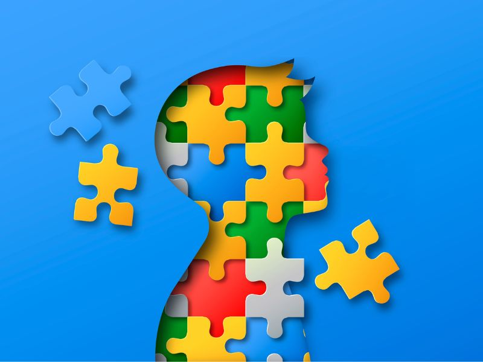

SONIC Y EL AUTISMO
¿Por qué a las personas autistas les gusta Sonic?
Mucha gente está familiarizada con el personaje Sonic the Hedgehog, pero ¿sabías que es particularmente popular entre las personas autistas? De hecho, incluso existe un término para este fenómeno: "patología sónica". Si bien las razones detrás de esta afinidad no se comprenden completamente, existen algunas teorías sobre por qué las personas autistas podrían sentirse atraídas por el erizo azul.